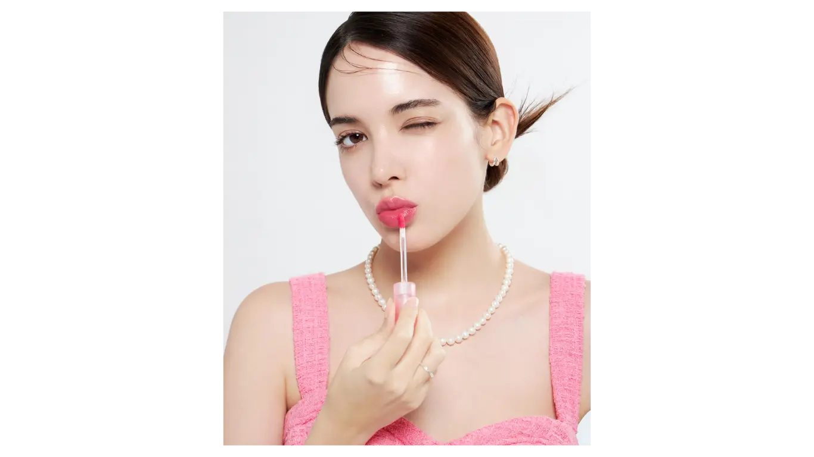
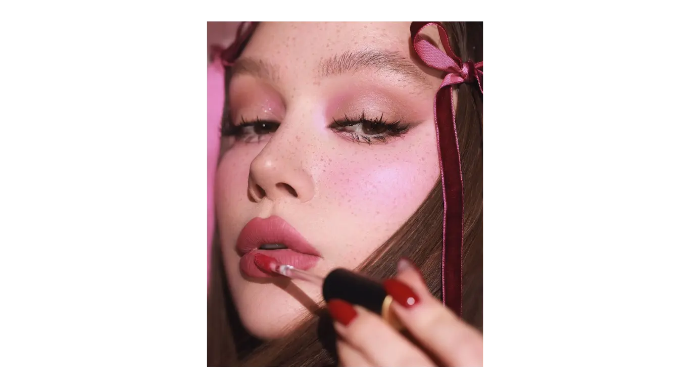
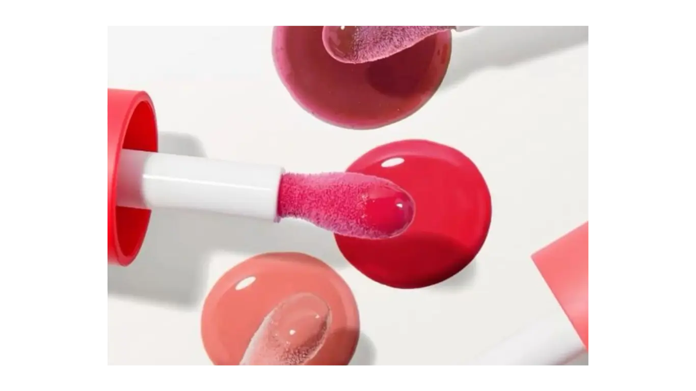

Las últimas tendencias en moda, belleza y lifestyle, inspiración de celebridades, gastronomía, deporte y los temas que marcan la conversación en Aloure.

BELLEZA
14 de marzo de 2026
Los labios siempre han sido uno de los elementos más expresivos del rostro, capaces de cambiar completamente un look y reflejar personalidad. Elegir el producto adecuado no solo aporta color, sino también define tu estilo y confianza. En los últimos años, los lip tints y lip stains se han convertido en los favoritos de quienes buscan resultados duraderos y un acabado impecable, desde looks naturales hasta más sofisticados. Estos productos combinan practicidad, versatilidad y moda, por lo que entender sus diferencias te ayudará a encontrar el aliado perfecto para cada ocasión.
Los lip tints se caracterizan por su ligereza y comodidad. Su fórmula fluida permite una aplicación rápida y fácil, aportando un color sutil que parece parte natural de tus labios. Además, muchos incluyen componentes hidratantes, evitando la sensación de sequedad y manteniendo los labios suaves durante horas. Son ideales para quienes buscan un look diario, fresco y juvenil, y permiten experimentar con distintas intensidades según la cantidad de producto que apliques. También se prestan para efectos degradados, mezclando colores y creando acabados modernos y divertidos.

Los lip stains, en cambio, están diseñados para quienes priorizan intensidad y duración. Su color más concentrado y acabado mate se mantiene intacto durante largas horas, incluso frente a comidas y bebidas. Para un resultado óptimo, es importante preparar los labios previamente: exfoliarlos suavemente y aplicar hidratación antes de usar el producto. La aplicación precisa, ya sea cubriendo todo el labio o concentrando el color en el centro, permite lograr efectos profesionales y sofisticados. Los stains son perfectos para eventos, fotos o momentos en los que no querés preocuparte por retoques constantes.

Además, ambos productos pueden combinarse para resultados creativos: un stain como base aporta intensidad y duración, mientras que un tint encima da un acabado fresco y jugoso. También es posible jugar con texturas y colores, adaptando tu maquillaje a la temporada, tu outfit o incluso a tu humor. Esta versatilidad convierte a los lip tints y lip stains en herramientas esenciales dentro de cualquier rutina de belleza, desde el maquillaje minimalista hasta el más elaborado.

Al final, más allá del color o el acabado, lo importante es que tus labios reflejen tu personalidad y estilo. Con los lip tints y lip stains, podés experimentar con diferentes looks, desde un toque ligero y natural hasta un labio intenso y protagonista. Cada producto tiene su encanto y función, y saber elegir entre ellos te permitirá destacar y jugar con tu maquillaje de manera creativa y divertida.
Las últimas tendencias en moda, belleza y lifestyle, inspiración de celebridades, gastronomía, deporte y los temas que marcan la conversación en Aloure.